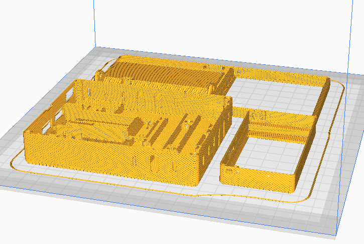
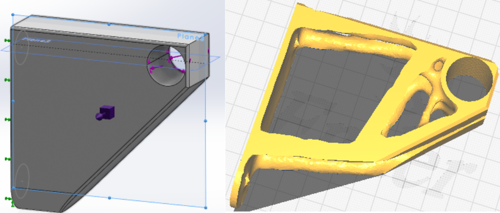
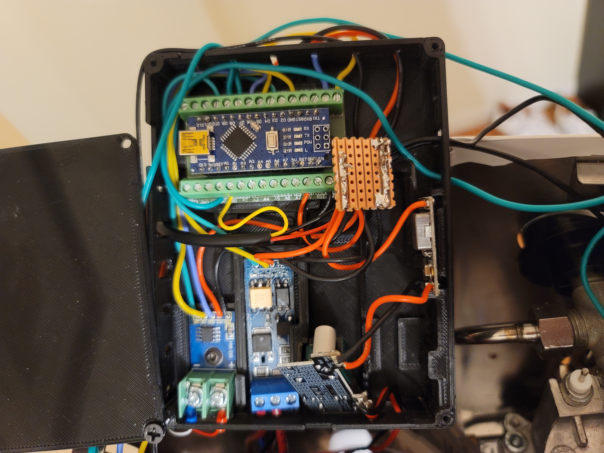
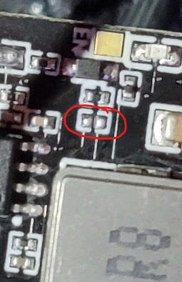

Gaggiuino and Topology Optimization
Gaggiuino and Topology Optimization
Summary
This is one of the more recent projects that I've been working on. It is an upgrade to my espresso machine, to allow for more stable temperatures and the ability to adjust the pressure while pulling a shot. It allows to see the active pressure and temperature as the shot of espresso is being made. Throughout this project, I had to use my soldering and electrical troubleshooting skills to fix some of the issues that occurred during the installation and development process. I had consistent issues with a lack of communication between the display and the Arduino, but through some help from the discord and my troubleshooting, I was able to fix it.The entire project is based on an Arduino Nano and a Nextron touchscreen.
I also wanted to create a topology-optimized towel rack bracket. For reference the design is shown in the lower right of the photo. I also wanted to change the look of the espresso machine. To change the design I learned how to wrap objects.
This project is thanks to the Gaggiuino forum as they provided me with the resources to make it.

Procurement phase and side projects
The first phase of this project was to acquire the parts that were necessary. This was simply done as there was a bill of materials. Most of the components needed were sourced from Aliexpress, but due to unavailability, I had to source them from other vendors and comparable parts. Since most of the parts were coming from China I had a lot of time to prepare. So, I took this time to print out the parts needed in PETG and read over the documents and the discord so I don't make common mistakes.
I also took this time to work on the side projects to this one, the wrapping of the machine and the topology-optimized towel rack. Wrapping the machine was pretty easy as the geometry of the machine is very simple. I had some concerns with the wrap losing its ability to stick to the machine due to the temperature cycling, but very quickly realized if I used automotive wrap I'll be fine as vehicles go through even larger temperature cycles.
For the towel rack, I needed something to hold a wooden dowel off to the side of the table that the espresso machine was on, but I wanted to make it functional yet cool looking, so I decided to use topology optimization. For the constraints, I made the face of the bracket that is going to be up against the table as fixed. For the forces, I put a downward force, of 50N, on the internal half of the hole as well as a torque, of 10Nm. I then made it reduce the weight by 85%. To the left, you can see the constraints and finished model.

Building phase and Troubleshooting
During this phase, I had to prepare all the electronics, make the connections, and place them all into the machine. This began with setting out all the components in the case provided by Gaggiuino and seeing where they would be placed to determine the cable lengths. I then had to decide how I wanted to create a common +5V and Ground for all the components to connect to. I decided to use a stripboard. Once I completed wiring up the components inside the electronics enclosure, on the right, I then started to dissemble the espresso machine to start hooking up the various components.
I followed the documentation religiously and got everything all hooked up. Once I doubled checked the wiring, using my multimeter, I went to perform the first start-up. This is where the first issues occurred. When I first started up the machine, it all turned on fine it was just that the screen was showing 0C and 0 bars of pressure. I was able to then find, from the discord, that this meant that the screen and the Arduino Nano weren't communicating properly. The first thing I tried was to try a different nano, this solved the issue momentarily as when I moved anything it went back to showing 0. I then narrowed the problem down to faulty wiring or an unstable power source. Since I didn't have another power source, I rewired everything over again. The problem persisted. The only option now was the unstable power source, so I switched to a different voltage step down as I had another(that being a variable buck converter I had). While removing the old device, I found that the part has some components missing(as can be seen on the left) . Once I had that all finished, the machine was functioning as wanted!